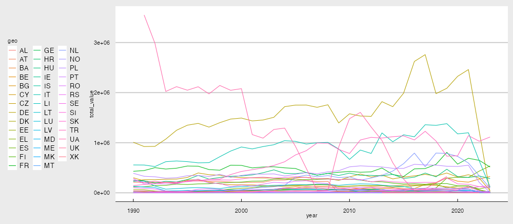
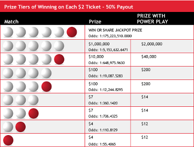
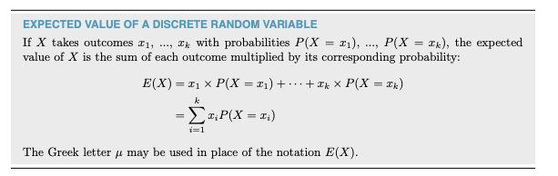
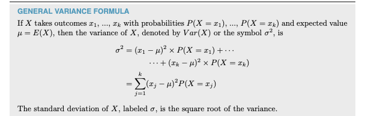
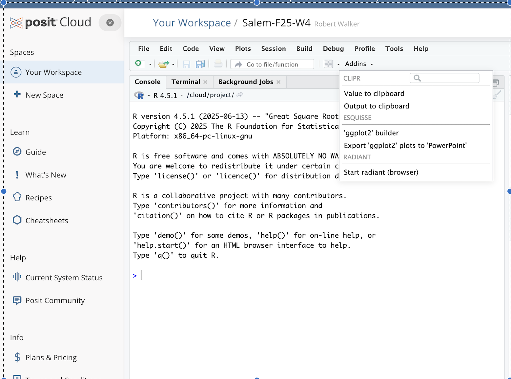
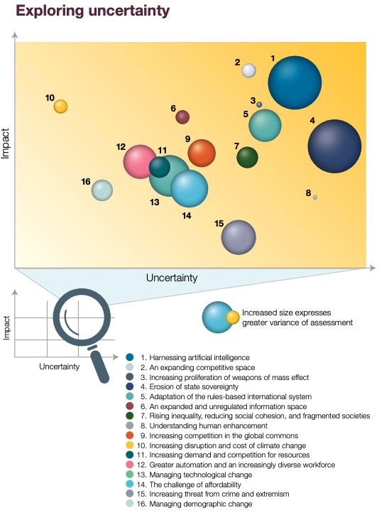
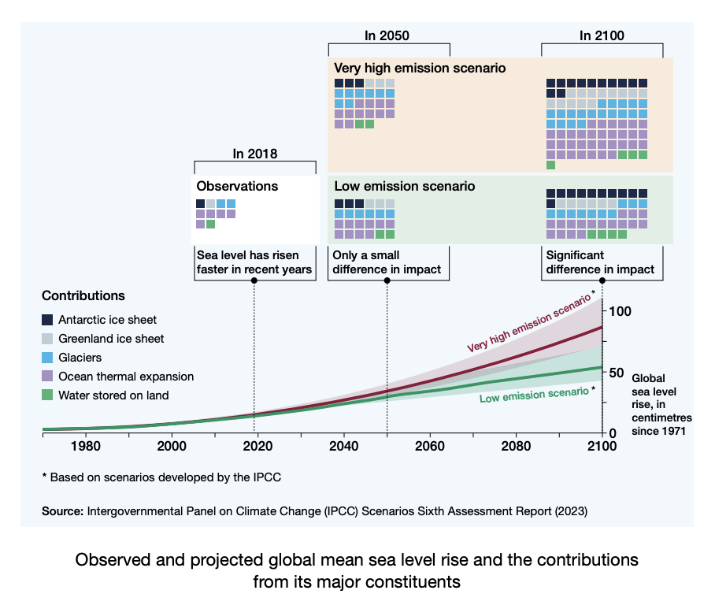
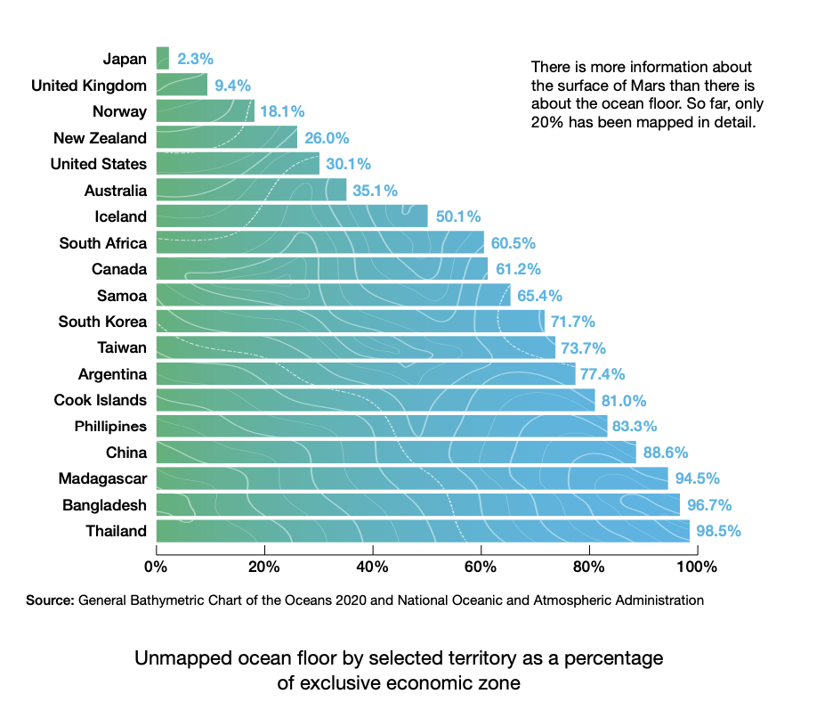
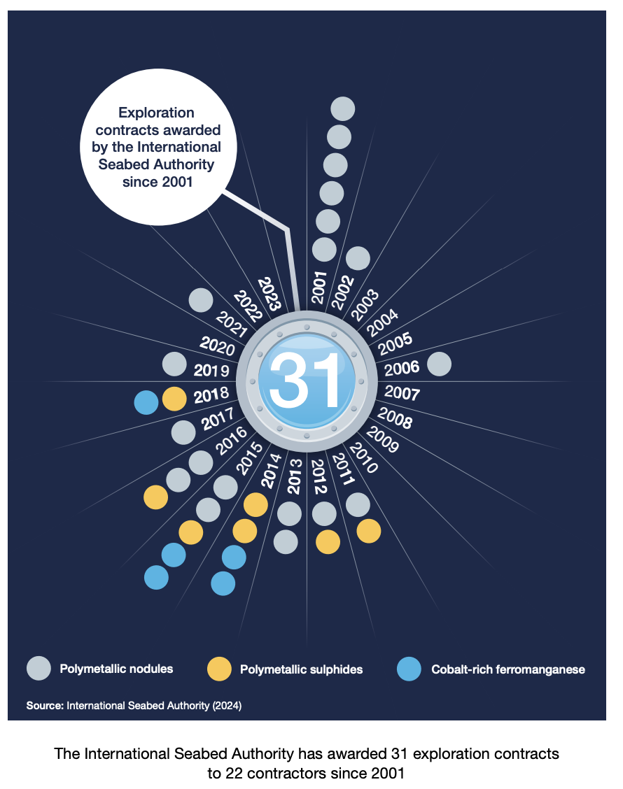
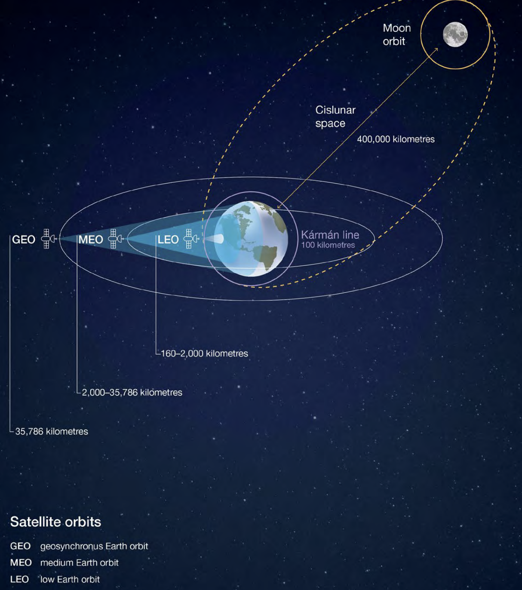

[1] 175223510Evidence, Visualization, and Biases
Global Strategic Trends, part 1
Robert W. Walker
2025-09-26
A Prompt for the Day
What is the value of this?
Introducing causality….
Augmented Analysis with Claude
The Plot in Esquisse
Some Probability
Some Language
Sensitivity refers to the ability of a test to designate an individual with a disease as positive. Specificity refers to the ability of a test to designate an individual without a disease as negative.
False positives are then the complement/opposite of specificity and false negatives are the complement/opposite of sensitivity.
| Truth | Positive Test | Negative Test |
|---|---|---|
| Positive | Sensitivity | False Negative |
| Negative | False Positive | Specificity |
Examples:
- Drug testing
- Diagnostic testing
Applied to Hypothesis Testing
When we get to hypothesis testing in a few weeks, this comes up again with null and alternative hypotheses and the related decision.
| Truth | Reject Null | Accept Null |
|---|---|---|
| Alternative | Correct | Type II error |
| Null | Type I error | Correct |
A COVID test
Suppose a COVID test is 0.99 sensitive and 0.95 specific. At the time of administration, it is thought that roughly twelve percent of the population is infected.
What proportion of tests are positive?
- Two positive tests:
- True positives 0.99*0.12=0.1188 and
- False positives 0.05*0.880=.044;
- sum 0.1628.
What is the probability that a person with a positive test is infected?
- Of .1628 positive tests, 0.1188 come from the infected:
\frac{0.1188}{0.1628} = 0.7297
Two Further Issues in Probability
- Juries and Bayes Rule
- Counting Rules
Counting Rules
- Simple counting rules, k questions [True/False, n=2]: N^k
- Multi-step experiments: Whataburger
- Factorial designs
- Combinations and permutations
Whataburger
Texas Fast Food Chain says there are 36,864 to order a Whataburger. How? - 2 burger patties (Regular, Junior) up to triple meat (R,J,RJ,RR,JJ,RRR,JJJ,RJJ,JRR) - 4 bread options - 3 condiments (mayonnaise, mustard, ketchup) - Vegetables (lettuce, tomato, pickle, onion) - Cheese, jalapeno, bacon 9*4*(1+3+3+1)*(1+4+6+4+1)*(1+3+3+1)
Just like the t-shirts say, 36,864 ways to make a whataburger!
Meetings
Six students wish to meet with a professor… - Alice, Bob, Cat, Dharma, Ernest, Fred How many arrangements of the meetings into six slots? - Six ways for the first slot (ABCDEF) - Five ways for the second (whomever is not first) - Four ways for the third, and so on….
6*5*4*3*2*1=720
Permuations and Combinations
The key difference is whether or not the order matters. Permutations deem order as relevant whereas combinations do not. There are (at least as many or) more permutations than combinations.
- Is the Powerball lottery a permutation or a combination?
- What about a seating chart for this class?
Powerball
- 59 white balls numbered 1 through 59
- 35 red balls numbered 1 through 35
- Choose 5 white balls and one red ball.
Calculating (old) Powerball
- Order doesn’t matter for the chooser, you choose six numbers (five white, one red)
- Then just apply the formula for combinations (but we need to account for the 35 red balls).
_nC_x = \frac{n!}{x!(n-x)!} = \frac{59!}{5!54!}
So the chances of winning the lottery are just a combinations problem with a second-step.
Ground Truth
Image
New Powerball
- Five white balls: 1 through 69
- One red powerball: 1 through 26
Random Variables
I do not love the book definition of this. Technically, it is a variable whose values are generated according to some random process; your book implies that these are limited to quantities.
It is really a measurable function defined on a probability space that maps from the sample space [the set of possible outcomes] to the real numbers.
A Core Idea: Independence
What does it mean to say something is independent of something else?
- The simplest way to think about it is, “do I learn something more about x by knowing y than not”. If two things are independent, I don’t need to care about y if x is my objective.
General Ideas
- Expectation

- Variance

Part of 3.4 are incomplete.
- Covariance
- Linear Functions of Random Variables
Two Examples of Simpson’s Paradox for Homework
- Discrimination
- Admissions
Introducing Esquisse
Esquisse
Executing
esquisse:::esquisser(viewer="browser")
NB: It needs to run in a separate browser window.
Selecting Data
What is available in the environment?
Setting the Context for GST 7
Note the data of dissemination.
GST 6
Image
A Model
Six Drivers and Five Core Contradictions
Impact and Uncertainty
Cross-Impacts
Four Future Worlds
Five Pathways
Global Strategic Trends: Graphics
Splitting Up the World
Regions
Three Areas
- Demographic Breakdown
- Digital Usage
- Climate, or ….
Demographics

Digital
Third Thing
- Arctic
- Antarctica
- Oceans
- Space
- Cyberspace
The Arctic
Antarctica
The Oceans
The Oceans



Space/Orbits

Cyberspace
Cyberspace
Themes
- Society
- Economy
- Environment
- Information and Technology
- Conflict and Security
Themes
Society
Economics
Environment and Ecology
Environmental Concerns
Info Tech
Conflict and Security
image credit: page 419
Conflict and Security
The Page on Global Strategic Trends
References are all in the report.

DADM-Fall 2025